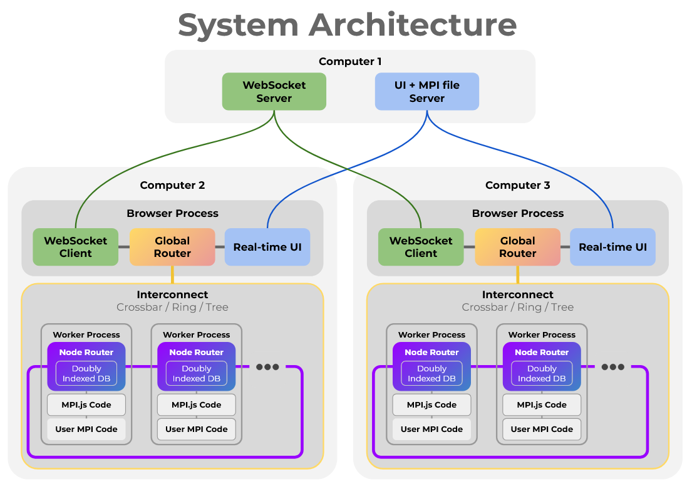
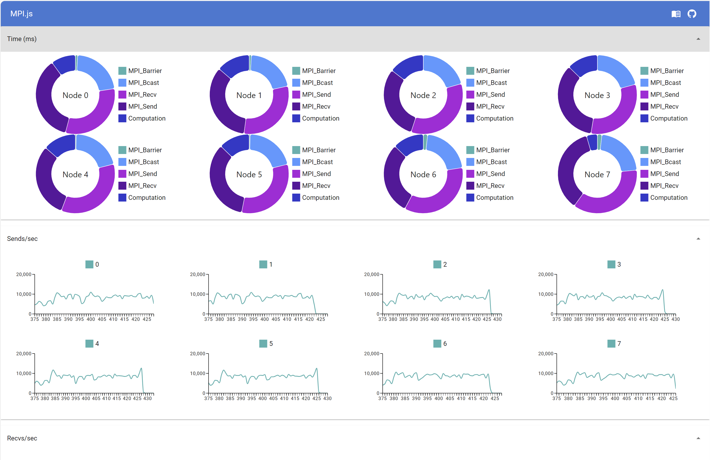
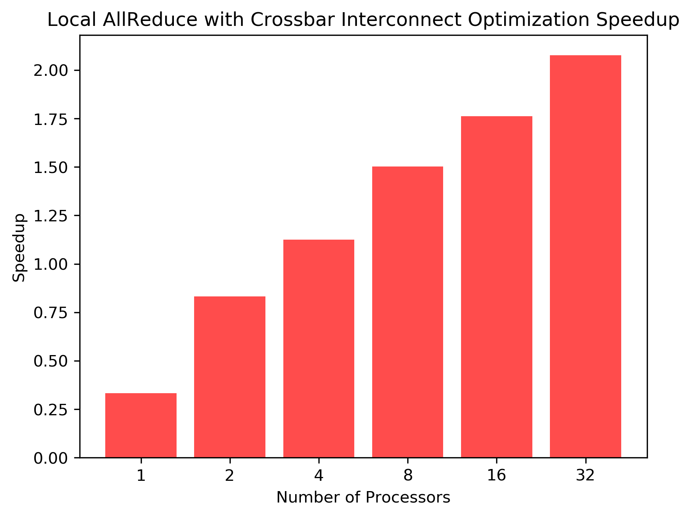
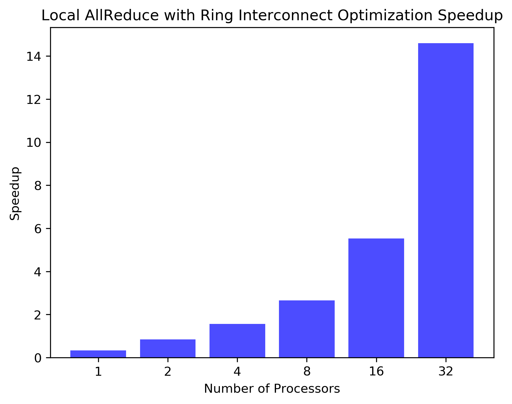
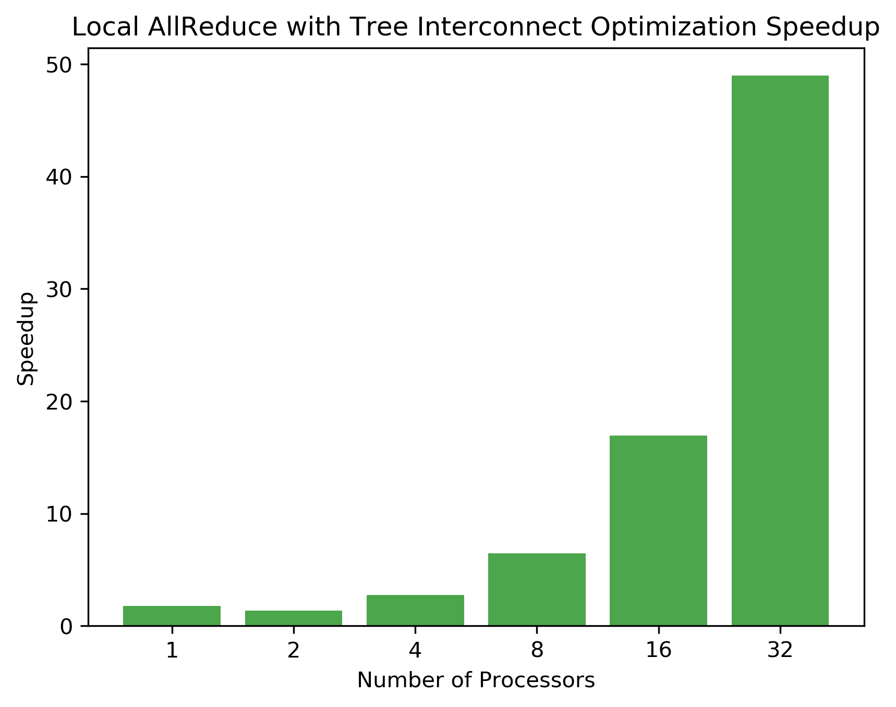
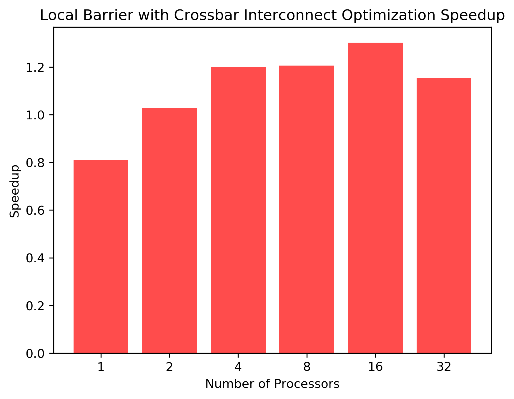
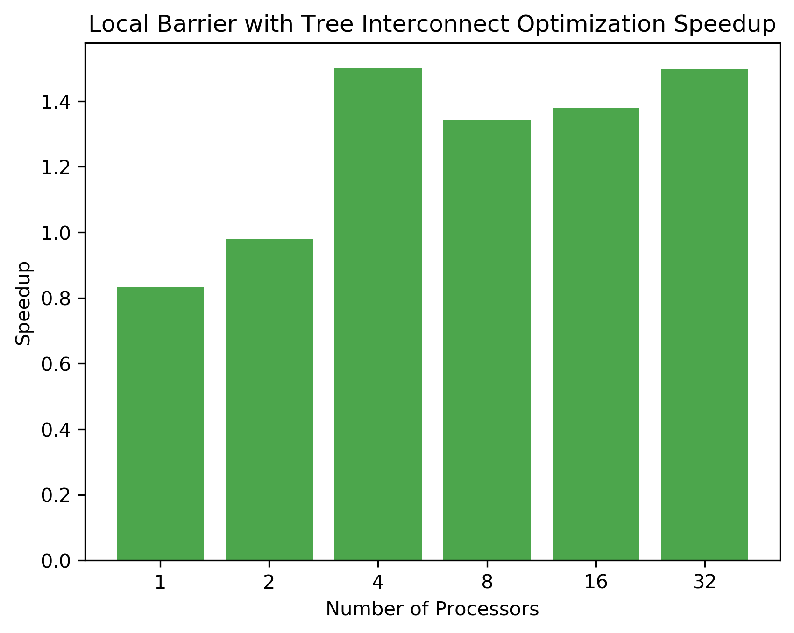
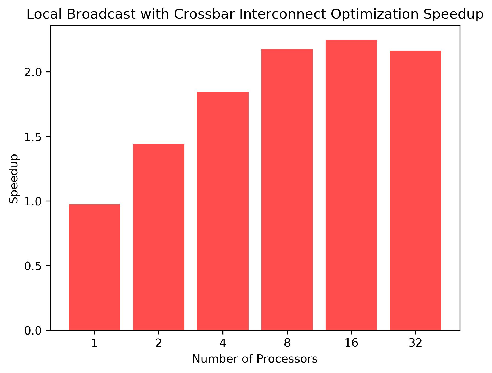
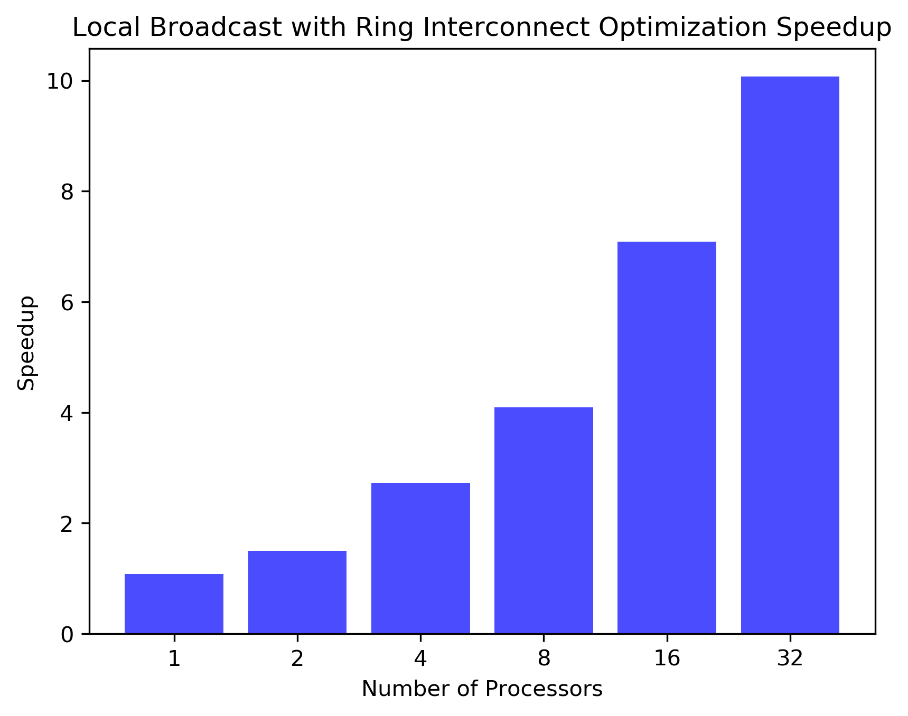
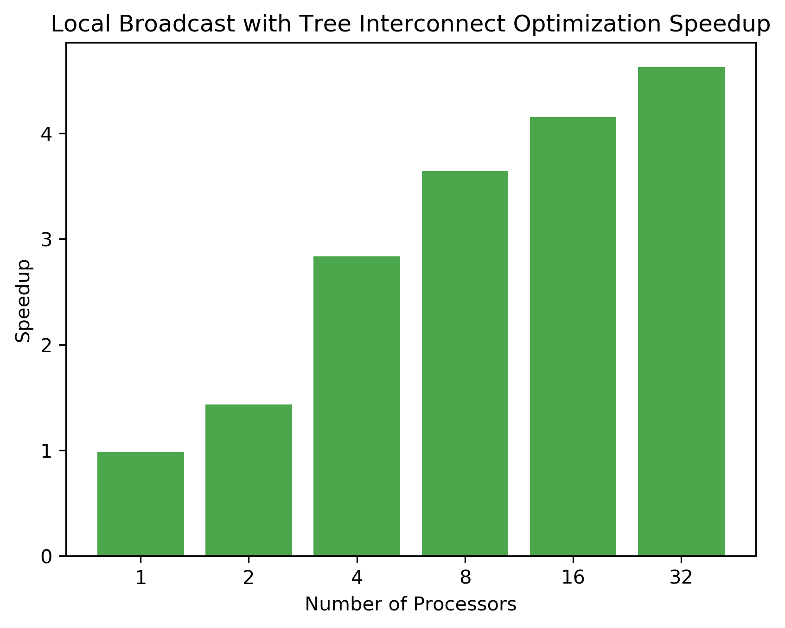

Final sean
PROJECT: MPI.JS
URL
https://the-parallel-gods.github.io/mpi.js/home/
SUMMARY
We want to create an MPI library in the browser using JavaScript, implement some of the APIs (bcast, barrier, all_reduce, ...), use them to run MPI programs, and optimize the MPI collective APIs given the browser environment.
BACKGROUND
MPI has never been implemented in JavaScript in the browser before, so we are bound to run into many new interesting problems specific to the runtime environment. In this section, we provide some background information on how JavaScript works and describe the challenges it poses. In the next section, we will describe our approach to solving these challenges.
Processes inside a browser are very isolated
For good security reasons, each process in the browser is very isolated from the others. This means that there is no shared memory between processes, and communication between processes is limited. The only types of communication that are allowed are point-to-point MessageChannels and BroadcastChannels. To make things worse, BroadcastChannels are rate-limited one message per 100ms, which is too slow. Effectively, we are forced to use MessageChannels for our communication inside a browser.
JavaScript is event-driven single-threaded language
Normally, JavaScript is designed for UI. What event-driven means in that context is every flow of control is initiated by an event, like a button press. Moreover, since it is single-threaded, no other code gets a chance to run until the function for that event finishes. This is a problem for parallel programming, because we can't just spawn a new thread to do some work in the background. This is a huge limitation when it comes to supporting non-blocking MPI operations.
The browser cannot create a WebSocket server
In this project, we want to support MPI programs that run across multiple computers over the Internet. Since the browser cannot create raw TCP or UDP sockets, the best option is to use WebSockets, which is a higher-level protocol built on top of TCP. However, since the browser does not have the permission to create servers, we need to have a centralized WebSocket server that all the browsers connect to. This server will be responsible for routing messages between the browsers.
Browser comes with a UI
Since the browser already provides an HTML UI, we can use it to show the status of the MPI program. In this project, we will take advantage of this by creating a live dashboard that shows the diagnostic information of the MPI program in real-time.
APPROACH

Our system architecture is inspired by network gateways at the global level and hardware architectures at the local level. We design our system to have a centralized WebSocket server that all the browsers connect to as well as a static file server. Inside each browser tab, the system creates many worker processes that run the user MPI code, which are all connected by hot-swappable interconnect architectures.
Address naming
Since this project involves significant routing work, here we formally clarify the address naming scheme we use.
- GR_ID: Global Router ID (unique identifier for each browser)
- NR_ID: Node Router ID (local unique identifier for each worker process, starts from 0 for each browser)
- PID: Node Router ID (global unique identifier for each worker process, continuous across browsers)
- NR_OFFSET: Node Router Offset (smallest PID in the local network)
The system is designed this way so that the user can use an abstraction that gives the illusion of every worker process being in the same global network; however, the system under the hood is designed to be as optimized as possible.
Example system:
Browser 1: GR_ID=0
Worker 1: PID=0, NR_ID=0, NR_OFFSET=0
Worker 2: PID=1, NR_ID=1, NR_OFFSET=0
Worker 3: PID=2, NR_ID=2, NR_OFFSET=0
Browser 2: GR_ID=1
Worker 1: PID=3, NR_ID=0, NR_OFFSET=3
Worker 2: PID=4, NR_ID=1, NR_OFFSET=3
Worker 3: PID=5, NR_ID=2, NR_OFFSET=3
WebSocket Server
The WebSocket server is responsible for routing messages between the browser. It assigns each browser a unique GR_ID and keeps track of the global routing table. Since this central server is a point of contention, we designed it to be as lightweight as possible, and we offload as much work as possible to the browser. Each request to the server is a simple JSON object that contains the message and the destination GR_ID. The websocket server uses SSMR optimization (described later).
Static File Server
The static file server is responsible for serving the user's MPI code, the MPI.js library, and the UI files. It is a simple HTTP server that supports hot loading the user's code into the browser.
Global Router
Sitting in the Browser UI process, the Global Router is responsible for routing messages between browsers. Whenever a Node Router wants to send a message to another browser, it delegates the message to the Global Router. The Global Router then forwards the message to the destination browser's Global Router, which then forwards the message to the destination Node Router. When messages get to the Global Router level, the PID and the NR_IDs are abstracted away, and the system only deals with GR_IDs. This is done to make the system more scalable and to hide the complexity of the system at each layer. The Global Router uses SSMR optimization (described later), so if it needs to send the same message to multiple other Global Routers, it only needs to send one message to the WebSocket server.
Node Router
In the worker process, there is a Node Router is responsible for routing, queueing, and feeding message to and from the user's MPI code. The Node Router is responsible for routing messages between workers within the same browser. The Node Router uses a custom routing table to determine the best route to send a message to another worker process. The Node Router uses SSMR optimization (described later) to reduce the number of messages sent.
In the best case, the interconnect that connects the Node Routers within the same browser is a crossbar, which allows any message to be sent to any other worker process with one hop. However, when more workers are needed, the number of connections grows quadratically, so we also support ring and tree interconnects that balance the number of connections and the number of hops.
Doubly Indexed Database
Whenever a Node Router receives a message, it needs to feed that message to the user's MPI code. In our JavaScript MPI implementation, we skip the back and forth checking that actual MPI implementations do, in order to improve performance. Instead, we directly deposit the message into a queue. Since the system is in a browser, where memory usage is already very high without MPI, we delegate the responsibility of not overflowing the queue to the MPI user. Since JavaScript is single-threaded and thread-safe, we can construct a very performant ProducerConsumer queue without locks.
# Pseudo code
msg_queue = DB()
recv_queue = DB()
def on_message(msg, tag, src_pid):
if recv_queue.has(tag, src_pid):
recv_queue.call(msg)
else:
msg_queue.add(msg, tag, src_pid)
def user_request_recv(tag, src_pid, callback):
if msg_queue.has(tag, src_pid):
callback(msg_queue.call(tag, src_pid)) # continue on user code with received message
else:
recv_queue.add(tag, src_pid, callback) # when the message arrives, it'll call my callback
Our focus then shifts to making the queue as efficient as possible, since many messages can be waiting there. This would have been simple, if not for the tags and src_pids of the messages. MPI supports having users receive messages with only specific tags and from specific processes. If the number of messages in the queue is very high, the search through all of them to find the right message will be very slow.
between worker processes in the same browser, much like a hardware interconnect. The best case is when the
One of the key structures we implemented to further our analogy of individual tabs acting as cores of a cpu were interconnects. Designed as a custom routing table, mpi.js supports a ring, tree, and crossbar interconnect for analysis. Our interconnects define the potential routes a node can use when sending messages across the local or global network of processes. The primary challenge when applying these interconnects to a highly distributed, parallel environment was setting a scheme where "node ids" required as little translation as possible to reduce any potential unnecessary overhead during sends and receives. Our "trick" to solve this is to have two sets of routers that help enable fast and efficient communication between nodes without burdening each tab to calculate the optimal route necessary for broadcast, reduce, or any other function. Our "Node Router" focuses on handling messages within a local network. This is how messages between tabs on the same browser are handled. If a message needs to be sent to another a machine and go across our global network we designed a "Global Router." The Global Router is connected to a GR network that on initialization does a handshake so that the centralized GR server knows all the routing information necessary. This allows the Global Routers to focus most of their computation on choosing how to forward incoming messages to the Node Router and leave most of the complex routing information to the central server. The "GR Server" has a modifiable routing table to ensure flexibility and fast forwarding. This server is also responsible for the designation of global identifiers that are essential in operations such as reduce and gather/scatter. This structure of routers allows for a divide-and-conquer break down of routing operations so that no one process is overburdened and our MPI worker tabs can remain primarily focused on strict computation unless specifically awaiting for a particular message.

RESULTS
Local Tests
Feel free to write some explanation for each graph, if some speedup/time don't make sense (the global ones), skip them, I'll do them later. I'll expand on them later if needed
You got it 8======D---< xD
Allreduce
ring speedup, tree speedup, crossbar speedup



Barrier
ring speedup, tree speedup, crossbar speedup



Bcast
ring speedup, tree speedup, crossbar speedup



Global Tests
Broadcast

 #### Reduce
#### Reduce
Barrier
At this moment, we are at 14 pages.
oU/images/benchmarks/Time_(ms)_Global_Optimized_Broadcast_Time.png)

BarrierUno### Sean (haoxians) - 50%
- MPI front end
David (drudo) - 50%
- MPI backend end